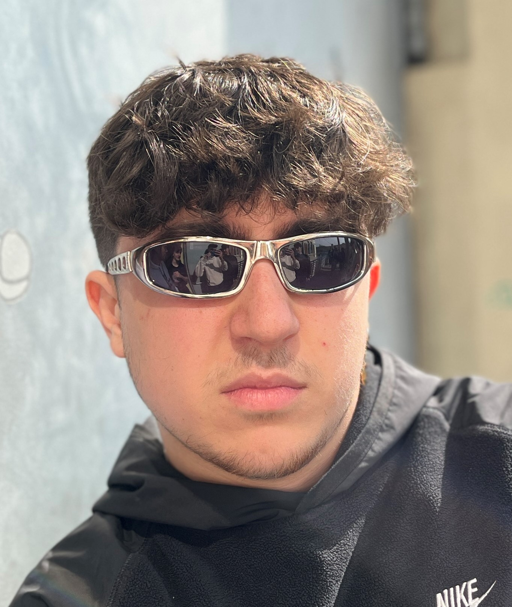
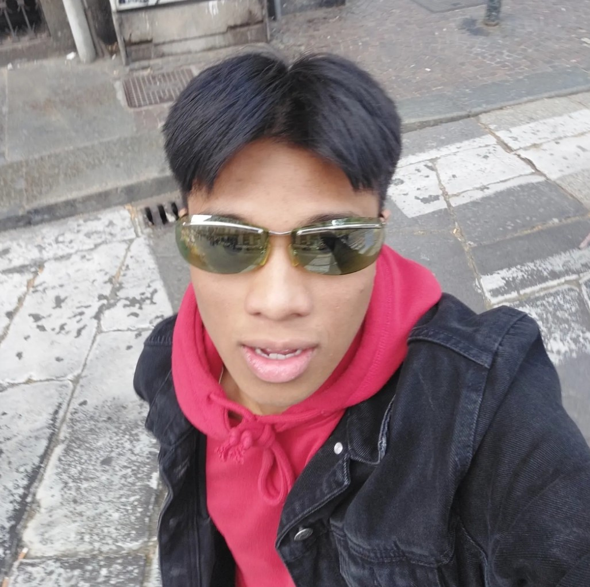
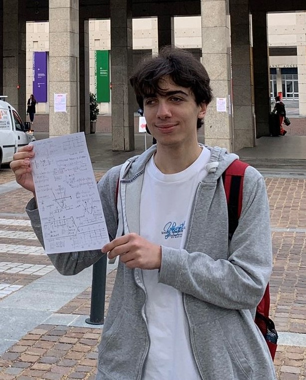
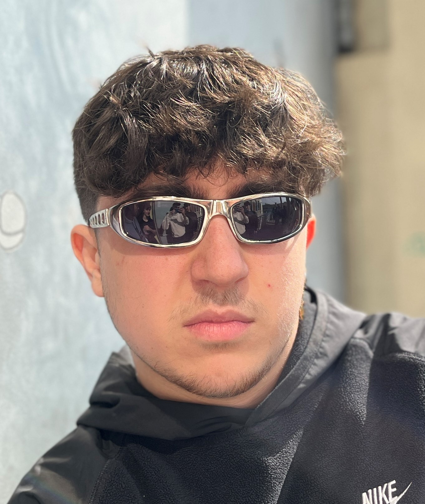
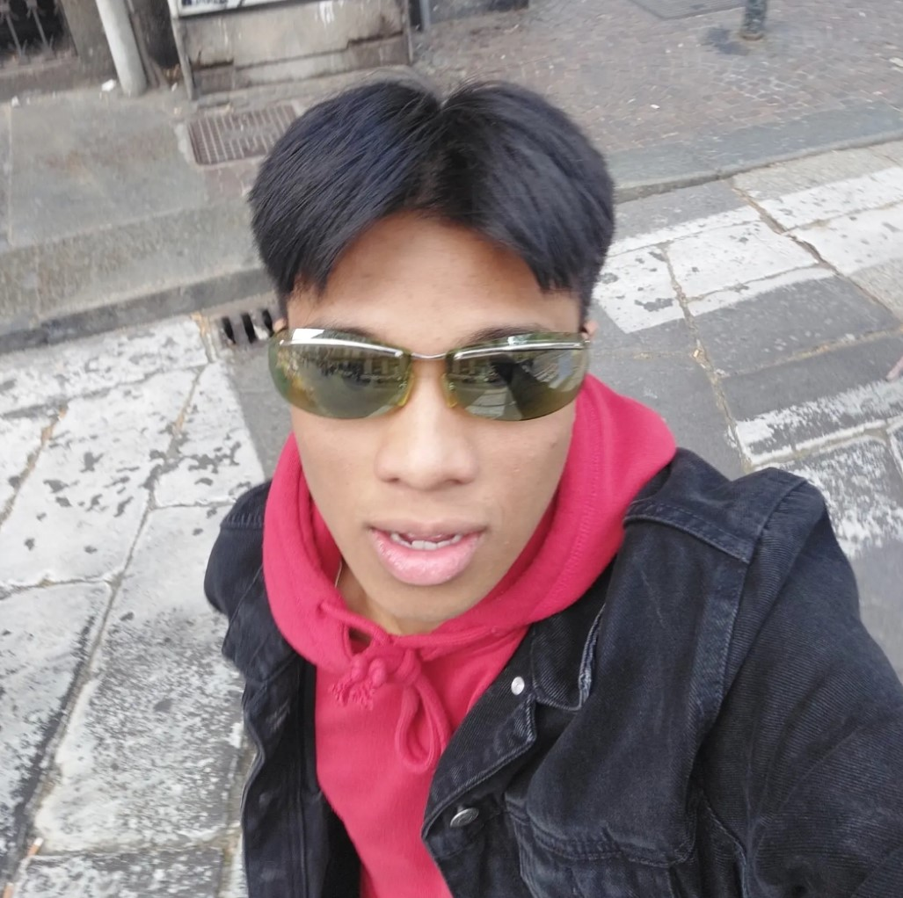
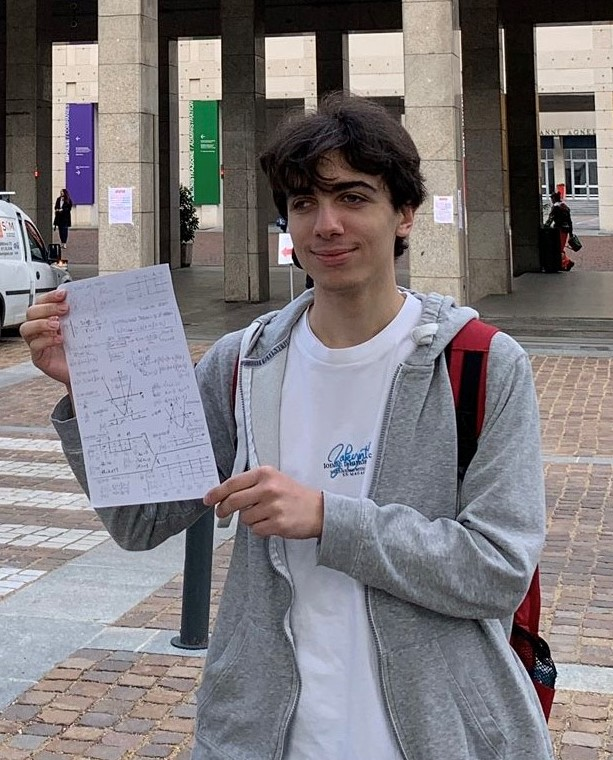

Chi siamo
Siamo gli studenti della classe 4C Info degli anni 2021-2022, 2022-2023, Durante il nostro triennio all'Avo abbiamo intrapreso numerosi progetti, alcuni dei quali hanno anche vinto premi regionali. Questo sito é nato con l'idea di tenere traccia di tutti i nostri progetti, ma sopratutto per far vedere ai futuri studenti cosa si puó fare all'Avogadro se ci si impegna e se si ha dedizione per quello che si fa.
Alcuni degli studenti che hanno svolto ruoli importanti nei vari progetti

 






Alessandro Circhetta
PROJECTS MANAGER
Tommaso Cipriano
ATTORE
Vincenzo D'Agostino
ATTORE
Valentino Dela Rosa
REGISTA E MONTATORE
Alessandro Salerno
SVILUPPO
Antonio Bellini
SVILUPPO